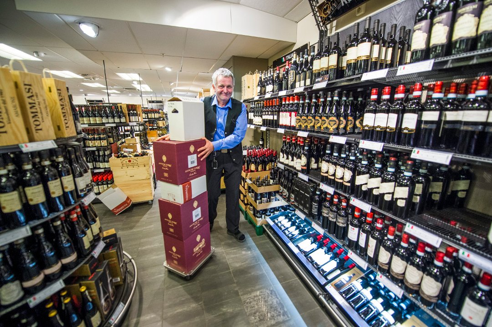

Nyhetsbrev 11.5.2018
I Østfold har salget gått opp. Men Vinmonopolets to butikker i Fredrikstad er ikke med på oppturen.
Union Eiendomsutvikling har foreløpig ikke en eneste leilighet å tilby i vannkanten på Glassverket. Ei heller har de en godkjent plan å bygge etter. Likevel har allerede 700 personer meldt sin interesse for de 550 leilighetene, som kanskje skal bygges.
Ssam Bistro har slitt med både strekmunner og surfjes fra Mattilsynet, men tok grep før jul. Nå har de fått tilbake smilefjeset.
Mjøndalen brukte en ganske uvanlig fremgangsmåte for å finne motstandere til treningskamper i vinter. Sportssjef Kenneth Karlsen vurderer å bruke samme metode når han en gang skal bytte ut trener Vegard Hansen.
(+) Konkurs anmeldt: Benyttet bedriftens bankkort på flere spisesteder og treningsstudio
Meninger
Skuffet over at kommunen ikke vil støtte «gratisfestival» med mer enn 10.000 kr
Mann i 30-årene alvorlig skadd i slåsskamp – en person pågrepet
Meninger
(+) Vinmonopolet i Fredrikstad sliter med ny kjøpesenter-konkurrent i nabobyen
I Østfold har salget gått opp. Men Vinmonopolets to butikker i Fredrikstad er ikke med på oppturen.